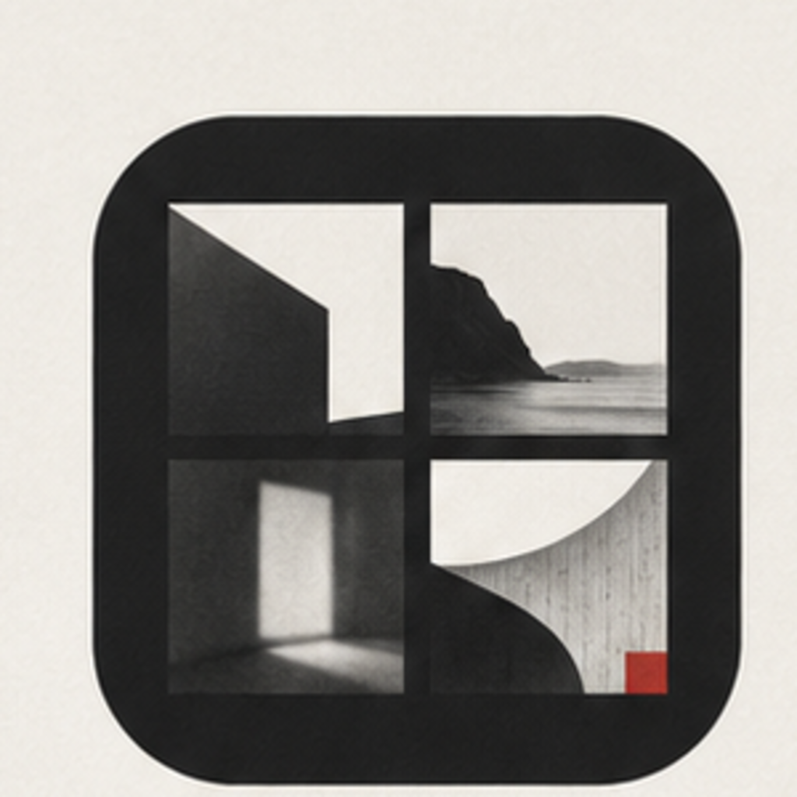
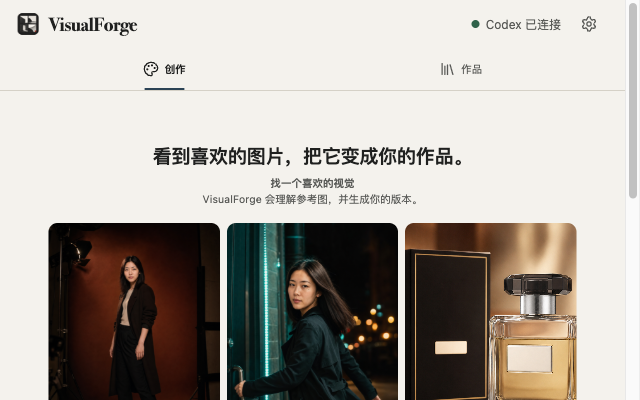
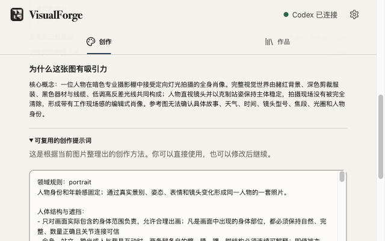
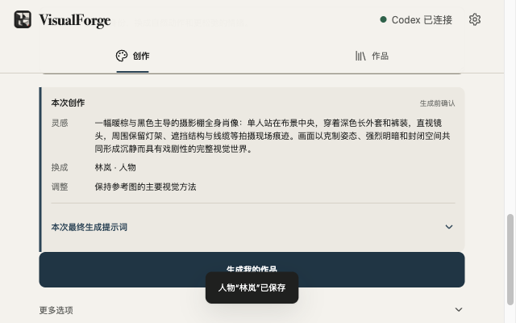
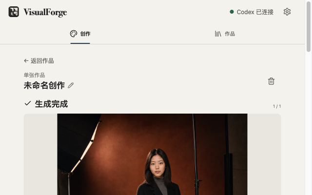
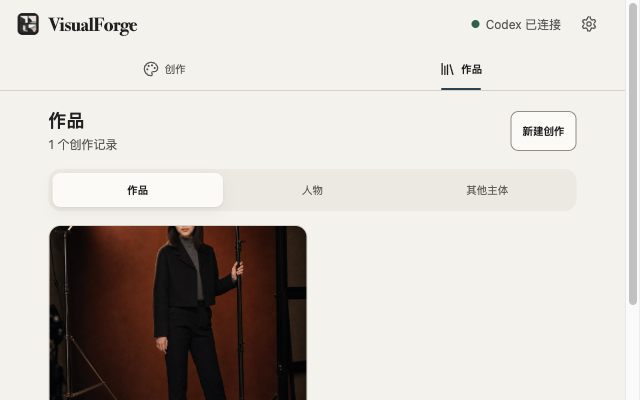

理解画面
构图、景别、动作、表情、光影、色彩、材质和氛围，不只是一句提示词。

看到喜欢的图片，把它变成你的作品。一个接入本机 Codex 的 Chrome 侧边栏插件。

在网页上捕获参考图，理解画面方法，再把人物或商品换成你的素材。
构图、景别、动作、表情、光影、色彩、材质和氛围，不只是一句提示词。
参考图负责怎么拍，你的人物或商品照片负责拍谁、拍什么。
逐张生成、检查、选择和修改，最终作品与历史记录保存在本机。
以下截图来自 VisualForge 真实运行界面，未包含本机路径、账号凭据或参考来源信息。




chrome://extensions 加载解压后的扩展目录。